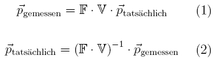
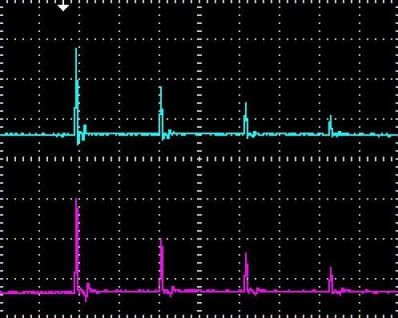
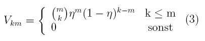
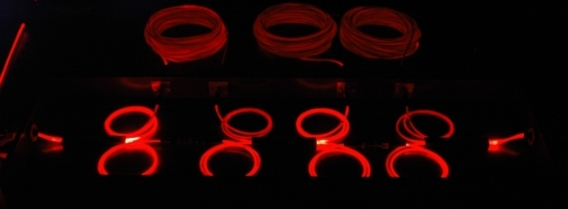
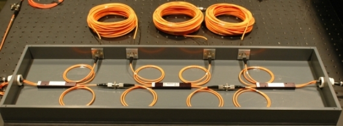
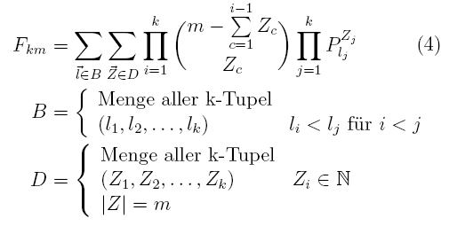

Photon Statistics Chapter 2:
Measurement and Analysis of the Experiment
In the last chapter, the set-up and simplification of the experiment were discussed. In this chapter, measurements are carried out with the experiment. Due to the long glass fibre cables, sizable photon losses occur in the experiment. For analyzing the experiment, the measured photon statistics therefore have to be distinguished from the actual photon statistics. The theory of converting between the statistics is discussed further down below.
Measurement with the beam splitter network
Instead of with bright laser pulses like in the last chapter, the network of beam splitters can also be run with pulses from single photons. A photon pulse from e.g. eight single photons is ideally distributed over the eight given time frames. In our interactive experiment, the single photons are generated via the process of parametric fluorescence in a non-linear crystal (see under Basics, coincidence, existence of the photon). The measurement of the photon statistics is carried out once with and once without the trigger detector. The power of the pulsed laser can be altered in the following interactive experiment with the two grey pushbuttons in front of the crystal. After each measurement, data analysis is carried out in realtime. The losses in the glass fibre network are computationally eliminated with a loss matrix. The unequal distribution of photons due to sub-ideal symmetric 50 % beam splitters is corrected with convolution matrixes. Both matrixes are explained further down below. After data analysis and calculation of the matrixes, a measurement protocol with error analysis is generated, which can be downloaded as a pdf-file. The exact steps from data acquisition to data analysis are shown in the interactive experiment in the top left hand corner. Please establish the photon statistics with and without the trigger detector at different laser powers. What do the statistics with and without trigger tell us? Which maximum photon number can be generated?
Observation:
With the trigger detector, the photon number n=3 can be generated at maximum laser power. Even higher photon numbers are possible with a more intensively pulsed laser system or with more efficient crystals (poled crystals). Higher photon numbers are, however, not desirable for experiments with single photons. At a lower laser power, the probability for single photons (n=1) is 99,7%. At this low laser power, we have an announced single photon source. In the next chapter, the photon statistics of the parametric fluorescence are recorded and compared to various statistics.
Theory: From the measured to the actual photon statistics
The photon statistics measured in the experiment do not coincide with the actual photon statistics. In the experiment, significant photon losses occur due to the glass fibre cables, the beam splitters and the detectors. The losses are dealt with using the model of a virtual beam splitter (see existence of the photon - chapter_3) and included in the calculation with the loss matrix V. The photons are not distributed evenly in the sub-ideal beam splitter network. The possibilities in which a given number of photons can be distributed in the beam splitters is included in the calculation using the convolution matrix F. With formula 1, the actual photon statistics can be converted into the measured photon statistics. With the experiment, only the measured photon statistics are known, however, and the actual photon statistics has to be established. This is done by inverting formula 1.

Theory: Losses in the beam splitter network
In the beam splitter network, significant losses occur. In the oscilloscope picture (pic. 1) a considerable decrease of the amplitude in each time frame is visible with bright pulsed laser light. The more each pulse is delayed via the glass fibre cable, the more sizable the loss.

pic. 1: Reducing the power of a pulse while in the network
Where do the biggest losses occur in the beam splitter network? In order to answer this question, intensive red laser light (cw-laser, 6mW, 635nm) is coupled into the glass fibre network. With a digital camera and an exposure time of 30s, losses can be made visible (pic. 2). It is clearly visible from the light that in each part of the glass fibre cable and especially at the fibre-integrated beam splitters, significant losses occur. With the coincidence method and the trigger detector, the losses in the network can be determined during the measurement (see coincidence - chapter 2). The losses can be described as a Bernoulli experiment with two possible events. The outcome of a Bernoulli experiment can be described for the experiment with the following loss matrix V:
.

pic. 2: Loss in the beam splitter network
above: Loss with intensive red laser light (exposure time: 30s)
below: set-up with normal light
Theory: Distribution of the photons in the beam splitter network
For a given photon number there are different possibilities as to how they can be distributed in the beam splitter network. The distribution is included in the calculation of the actual photon statistics with the convolution matrix F (formula 4). The convulution matrix takes the following error sources of the measured photon statistics into account:
- possibilities which detectors can be triggered simultaneously in order to measure k events (set B).
- possibilities of m photons being distributed to all output combinations (set D).
- not-exact beam splitter ratio of 50% (probability P).

Original data from the experiment:
10µW, 9µW, 8µW, 7µW, 6µW, 5µW, 4µW, 3µW, 2µW, 1µW, 0.1µW
We would like to thank the Max-Planck young academics group of Dr. Christine Silberhorn for scientific support on the experiment and for data analysis.
To the next chapter: Photon statistics of parametric fluorescence [klick]
Back to overview [klick]
Autoren: A. Strunz, P. Bronner, Oktober 2008
Translation: G. Murphy